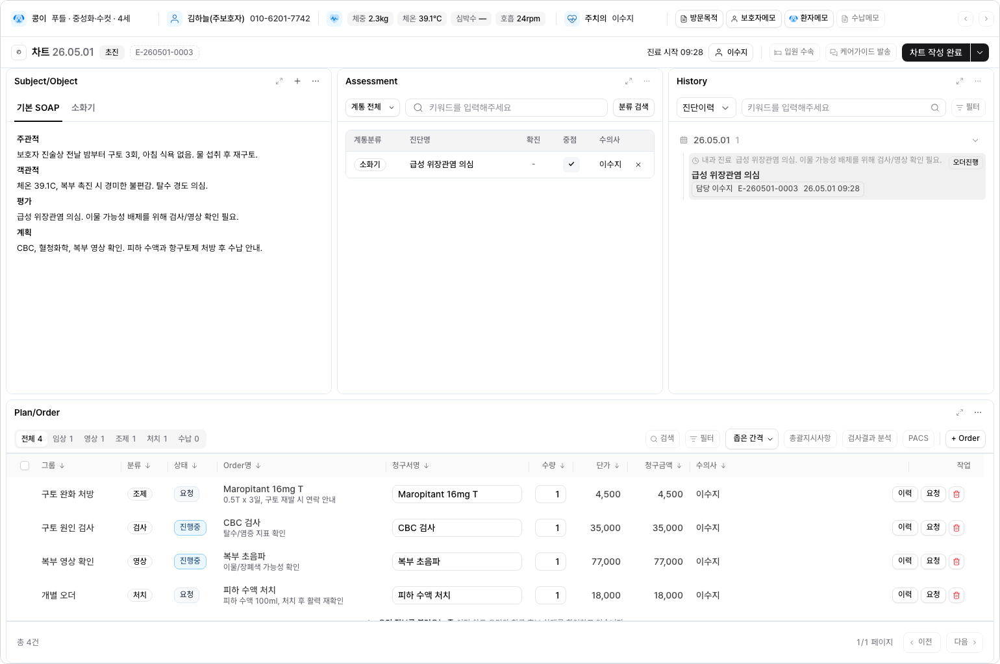
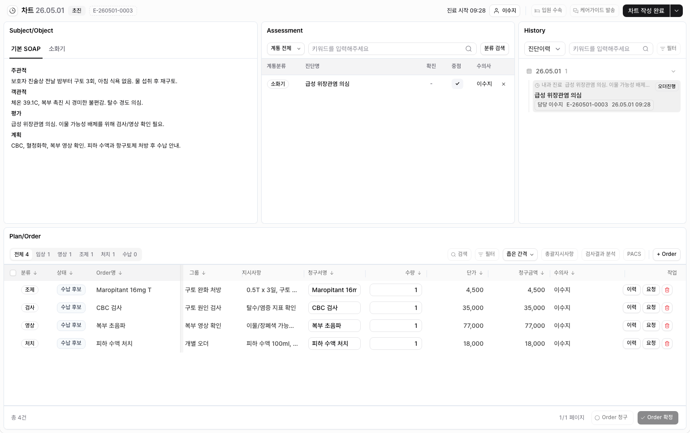

CHART-PR-021 · Implementation Result
차트 Contents V2 구현 결과
Figma의 차트 콘텐츠 구조와 픽셀 규격을 현재 애플리케이션의 실제 데이터·API·저장·권한 계약 위에 적용했다. 환자 정보바, 전역 네비게이션, 탑바, 모듈 사이드패널은 구현 범위에서 제외했다.
구현 결과
콘텐츠 기준 크기
48px 액션바와 920px 워크스페이스를 합친, 환자 정보바 제외 기준이다.
상단 패널 트랙
S/O와 Assessment는 같은 비율, History는 Figma의 좁은 보조 트랙을 유지한다.
Plan/Order 분할
식별 컬럼은 고정하고 실제 상세 컬럼은 독립 가로 스크롤로 분리했다.
구현 전후 캡처


Figma 노드와 px 매핑
| 영역 | Figma 노드 | 구현 규격 | 결과 |
|---|---|---|---|
| Contents | 27946:59005 | 1540 × 968 | 일치 |
| Action bar | 27946:59006 | 1540 × 48 | 일치 |
| Workspace | 27946:59032 | 1540 × 920, 좌우·하단 8px | 일치 |
| S/O | 27985:67438 | 566.5px 트랙, header 38px, toolbar 44px | 일치 |
| Assessment | 27985:75982 | 566.5px 트랙, table header 36px, row 40px | 일치 |
| History | 27985:104643 | 375px 트랙, 접힘 rail 46px | 일치 |
| Plan/Order | 27959:73769 | top 452px / resizer 8px / order 452px, footer 52px | 일치 |
패널 폭은 1540px 기준에서 위 절대값이며, 다른 데스크톱 폭에서는 같은 Figma 비율로 유동 확장된다. 좁은 화면에서는 각 임상 패널의 안전 최소폭 360px과 내부 가로 스크롤을 유지한다.
엣지·엠티·로딩·에러 상태
기존 shadcn Skeleton만 사용한다. 감소 모션에서는 pulse를 끄며 커스텀 스피너·스켈레톤을 추가하지 않았다.
Assessment, History, Order는 공용 EmrEmptyState를 사용하고, 필터 결과 없음과 원본 데이터 없음을 구분한다.
라이브 큐 403은 조회 권한 안내와 재시도를 제공하고, 쓰기 권한 없음은 기존 disabled-write 계약을 보존한다.
SOAP·진단·Order 입력을 화면에서 지우지 않고 지속형 인라인 오류와 유효한 재시도 안내를 표시한다.
Plan/Order 고정 컬럼은 움직이지 않으며 상세 컬럼만 스크롤한다. 페이지 수준 가로 오버플로는 0이다.
패널 액션은 rest 상태에서 숨고 hover·focus-within에 표시된다. 터치·coarse pointer에서는 항상 접근 가능하다.
컴포넌트와 데이터 연결
기존 컴포넌트 재사용
EmrDataTable, TanStack column pinning, EmrEmptyState, EmrInlineAlert, shadcn Skeleton, 기존 버튼·다이얼로그·패널 접기 컴포넌트를 확장했다. 새 디자인 시스템 계층이나 새 의존성은 만들지 않았다.
현재 데이터와 API
라이브 큐, SOAP note, diagnosis, chart history, Order draft/action/lifecycle, invoice candidate 응답을 그대로 사용한다. Figma의 예시 환자·오더 문자열을 애플리케이션 데이터로 복사하지 않았다.
Plan/Order 컬럼 계약
고정 영역은 선택 28px, 분류 80px, 상태 88px, Order명 198px로 합계 394px이다. 그룹, 지시사항, 청구서명, 수량, 단가, 청구금액, 수의사, 작업은 상세 스크롤 영역에 남는다.
기존 동작 보존
SOAP 자동·수동 저장, 충돌 처리, 진단 추가·삭제·확진·중점, 오더 정렬·리사이즈·선택·수정·삭제, 청구·확정 확인 다이얼로그, 진료 시작·완료 흐름, 패널 접기와 높이 리사이즈를 회귀 테스트로 확인했다.
검증 증거
tests/chart.spec.ts빌드의 기존 NFT tracing 경고와 개발 테스트 로그의 Tiptap 중복 extension·MaxListeners 경고는 남아 있다. 이번 차트 변경에서 새로 발생한 오류는 아니며, 차트 회귀와 프로덕션 빌드는 통과했다.